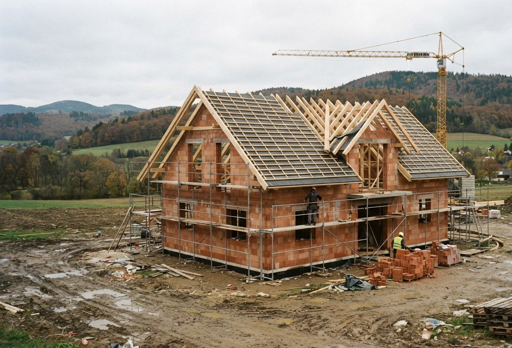

Beş adımda ev inşaatı: Projeniz nasıl ilerler?
İlk görüşmeden anahtar teslimine kadar her aşamada neler olduğuna ve neler hazırlayabileceğinize genel bir bakış.

1. Ön görüşme
Her şey isteklerinizle başlar: Kaç oda, hangi yapı tipi, ne kadar bütçe, hangi zaman planı? Arsa belgeleri (tapu kaydı, vaziyet planı, belediyenin yapılaşma kuralları) ve kabaca bir finansman çerçevesi çok yardımcı olur.
2. Planlama ve ruhsat
İsteklerinizden bir tasarım, oradan da ruhsat projesi çıkar. Proje gerekli belgelerle birlikte belediyenin yapı dairesine sunulur. İnşaata ancak izin çıktıktan sonra başlanabilir.
3. Teklif ve takvim
Çizimlere dayanarak kalemleri anlaşılır bir teklif ve aşamalı bir iş takvimi alırsınız. Böylece neyin ne zaman yapılacağını ve maliyetini önceden bilirsiniz.
4. Uygulama
Temel, kaba inşaat, çatı, cephe ve iç işler takvime göre ilerler. Önemli olan tüm taşeronları koordine eden ve karar gerektiğinde ulaşılabilen tek bir muhatabın olmasıdır.
5. Kabul ve teslim
Son olarak birlikte kabul yapılır, eksikler kayda geçirilip giderilir. Ardından teslim gerçekleşir ve yapının tamamlandığı resmi makama bildirilir.
Ücretsiz ön görüşmede projeniz için neyin mantıklı olduğunu birlikte netleştiririz.